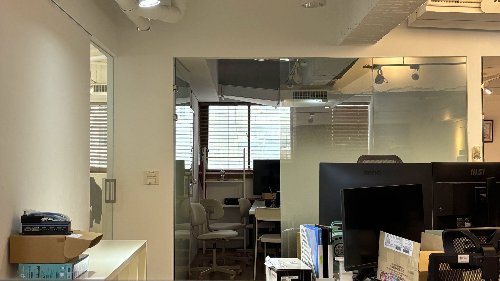
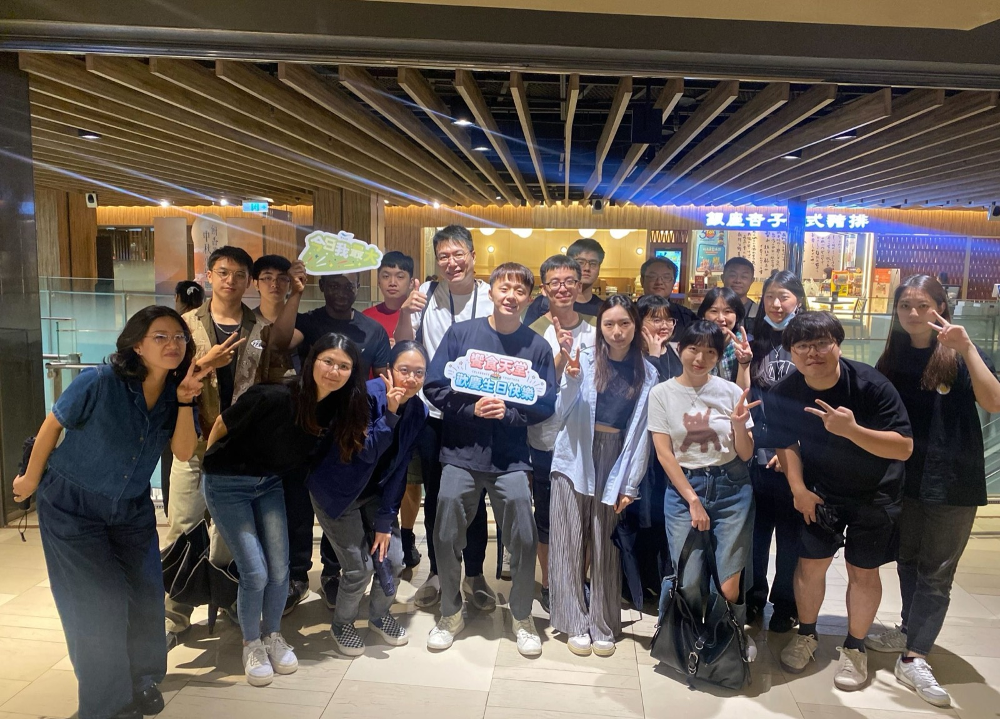
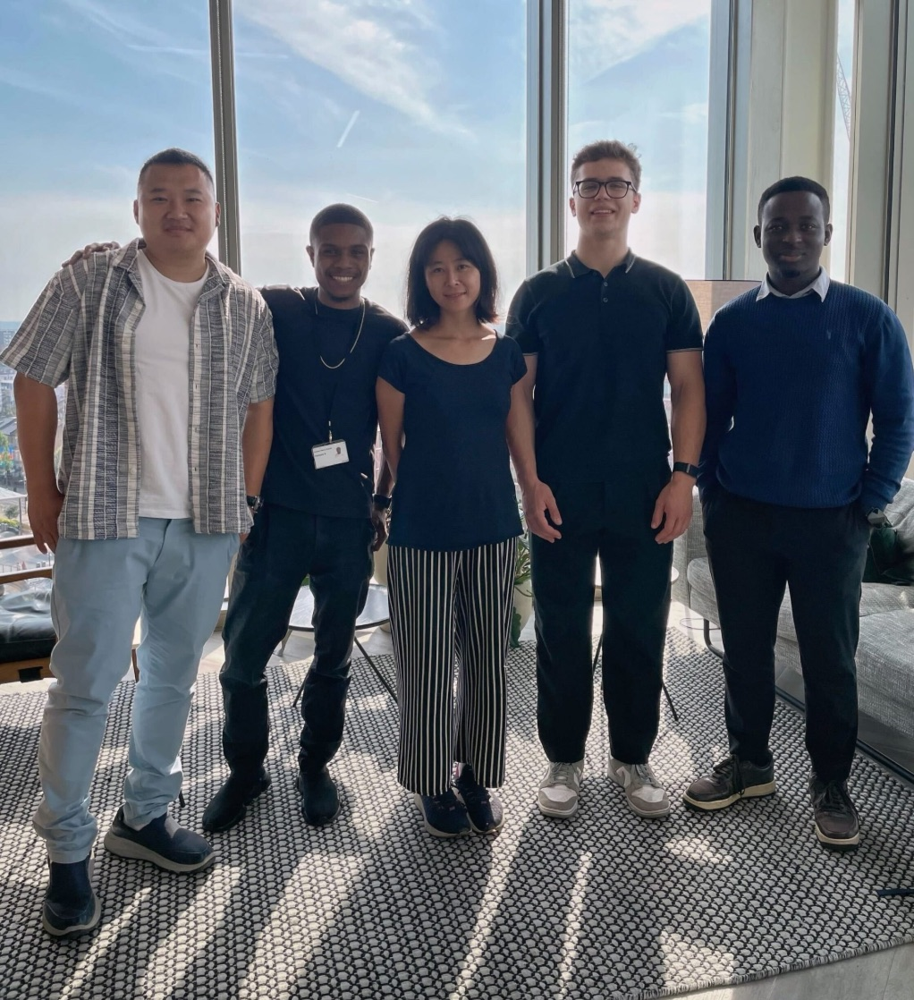
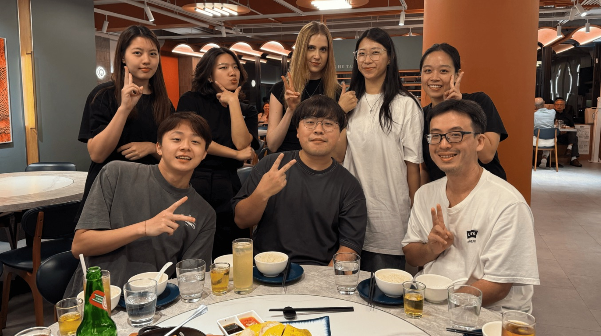

國際職缺
在台北與檳城，和我們一起打造智慧城市與數位孿生。
為什麼是工一
工一科技將於馬來西亞檳城成立分公司，正在尋找想在智慧城市與數位孿生領域長期發展的工程師。

工作環境
我們在台北的辦公室
工一科技提供舒適友善的工作環境，設有多間獨立的會議室與工作室。開放式茶水間備有咖啡機、氣泡水機等設備，每個月都會補充充足的飲料與各式點心，讓大家盡情享用。
工一的日常


工作地點
台灣 · 台北
總部
研發、創新與產品開發。完成培訓後，主要在台北工作。
馬來西亞 · 檳城
分公司 · 2025
海外營運、整合專案與國際合作。
技術方向
- IoT 與嵌入式系統
- 前端與後端工程
- DevOps 與雲端架構
我們在找的人
- 相關技術領域 3 年以上經驗
- 具備以下部分專長：AI、IoT、機器人、3D 視覺化、後端（Java、Node）、前端（Vue）、DevOps
- 日常工作使用中文；英文佳者尤佳
- 加分：HVAC、PV、EMS、Johnson Controls 或 Siemens 產品經驗
你會得到
- 在台灣的實作培訓
- 培訓期間協助簽證與住宿
- 真實的 AI 與智慧科技專案
- 跨文化、高效率的團隊
應徵流程
投遞申請
履歷、作品集（如有）、GitHub 或專案連結，以及說明背景與動機的求職信。
審核與作業
我們會仔細審閱，並可能請你完成一份簡短的技術或創意作業。
專案負責人面談
與專案負責人面談，找出最適合你的職位與專案。
整個流程約需兩個月。
請將申請寄至
rubyyou@onework.io國際實習計畫
兩到六個月，參與真實的 AI 與智慧城市專案。
與 TECHSTART 合作
與英國青年科技公益組織 TechStart 合作的國際實習計畫：讓在學生與應屆畢業生參與真實的 AI 與智慧城市專案。
實習生的日常

實習資訊
- 期間
- 2 至 6 個月
- 時間
- 每週至少 4 天，可彈性調整
- 開始
- 全年皆可開始
- 薪資
- 無薪，提供住宿與簽證協助
實習方向
- IoT 與機器人
- 3D 設計與視覺化
- 後端（Java、Node）與前端（Vue）
- 數位孿生與智慧城市的 AI 研究
誰可以申請
- 在學大學生或應屆畢業生
- 對科技、創新或數位轉型有熱忱
- 樂於在國際、跨文化團隊中學習
你會得到
- 台灣住宿協助
- 簽證與文件協助
- 協助適應台灣的生活與工作
- 導師指導、真實專案與更好的作品集
- 國際人脈
申請流程
投遞申請
履歷、作品集（如有）、GitHub 或專案連結，以及說明申請動機的求職信。
審核與作業
審核後，完成一份簡單的技術或創意作業。
導師配對與面談
我們為你配對專案團隊的導師，簡短聊聊你的目標、技能與想學的東西。
整個流程約需兩個月。
請將申請寄至
rubyyou@onework.io